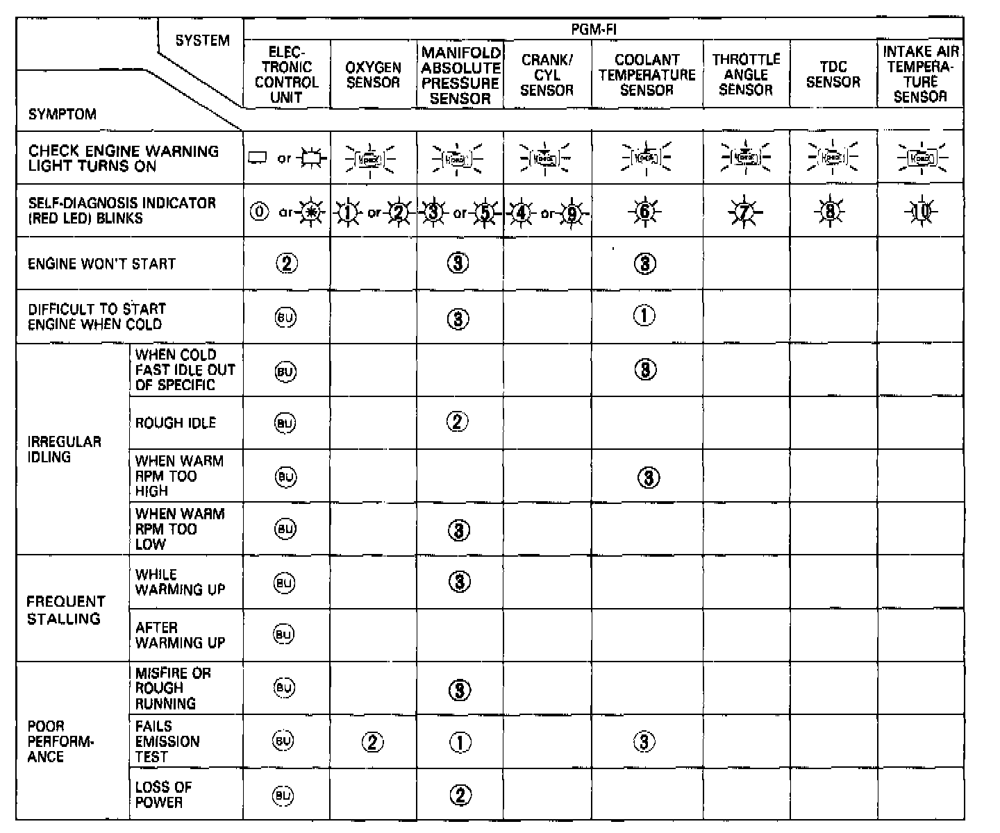
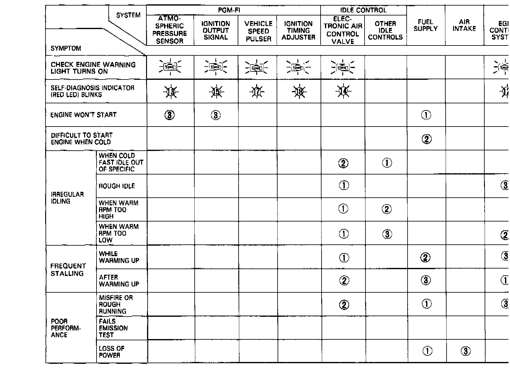

Symptom Troubleshooting Index
NOTE: Across each row in the chart, the systems that could be sources of a symptom are ranked in the order they should be inspected starting with (1). Find the symptom in the left column, read across to the most likely source, then refer to the component listed at the top of that column. If inspection shows the system is OK, try the next most likely system, etc.Part 1 Of 2:

�w�#Part 2 Of 2:

Symptom-to-System Chart
NOTE:
(*) If the code displayed is No. 11, 16, or is higher than 18, count the number of blinks again. If the indicator is in fact blinking these codes, substitute a known good ECU and recheck. If the indication goes away, replace the original ECU.
(BU) When the "Check Engine" warning light and the self-diagnosis indicator are on, the back-up system is in operation. Substitute a known-good ECU and recheck. If the indication goes away, replace the original ECU.
- If there is abnormal air intake noise, check the resonator control system.